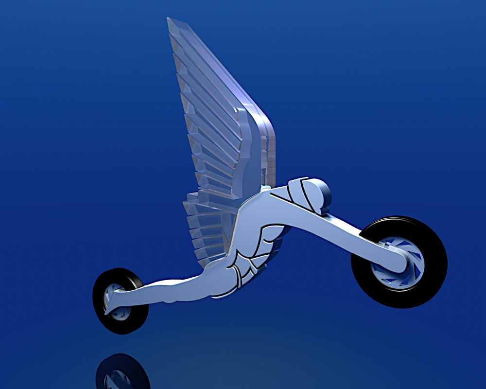

Disegni 3D
Nella computer grafica, il rendering ('restituzione grafica') identifica il processo di 'resa', ovvero di generazione di un'immagine a partire da una descrizione matematica di una scena tridimensionale, interpretata da algoritmi che definiscono il colore di ogni punto dell'immagine digitale.
